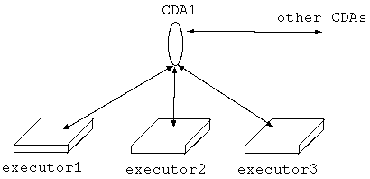

CDAの基本事項
- CDAはセル
クラス配送エージェント(略してCDA)はセルであり、一つのexecutor上に
1個のCDAが存在する(起動されているとは限らない)。そのGODは"cda"である。
- CDAの4つの役割
CDAの機能には、executor からの要求にしたがってクラスの検索配送を行うという
クラス配送機能と、クラスのミラーリング(オリジナルのクラス定義が変更を受けた
場合にそれをミラー先のクラス定義に自動的に反映させること)を行うミラー機能が
ある。
クラス配送機能はクライアント側のCDAとサーバ側のCDAがやり取りをすること
によって、実現されている。
ミラー機能も同様にクライアント側のCDAとサーバ側のCDAがやり取りをすること
によって、実現されている。
すなわち、一つのCDAは、
クラス配送機能のクライアント側として働く場合の役割、
クラス配送機能のサーバ側として働く場合の役割、
ミラー機能のクライアント側として働く場合の役割、
ミラー機能のサーバ側として働く場合の役割、
この4つの役割をこなす。
どの役割をどうこなすかはOZのプログラム中からCDAのメソッドを呼ぶこ
とによって、あるいはユーザがexecutor-shellからメンテナンスツールを使って、
設定する(CDAの使用に当たり必要なこと参照)。
以下、この4つの役割を説明する。
- クラス配送機能のクライアント側としての役割(クラス配送クライアント)
あるexecutorは、実行に必要なクラスファイルがローカルリポジトリに見当た
らない場合に、自分の上にあるCDAにそのクラスファイルをみつけてくるように要求
を出す。要求
を受けたCDAは検索方針に従って他のCDA(下に述べるクラス配送サーバ)に順番に
クラス検索・配送の要求を出し、クラスファイルが返ってきたらそれをexecutorに
渡す。
これがクラス配送機能のクライアント側としてのCDAの役割である。
この役割をこなしている時のCDAをクラス配送クライアントと呼ぶことにする。
検索方針とは、クラス検索・配送の要求をどのクラス配送サーバに出していくか、その順番である。
- クラス配送機能のサーバ側としての役割(クラス配送サーバ)
他のCDA(上で述べたクラス配送クライアント)からクラス検索・配送の要求を
受けたCDAは、自分が乗っているexecutorにその
クラスのローカルな検索を依頼し、
クラスが存在する場合は要求元のCDAに配送する。これが、
クラス配送機能のサーバ側としてのCDAの役割である。
この役割をこなしている時のCDAをクラス配送サーバと呼ぶことにする。
- ミラー機能のクライアント側としての役割(ミラークライアント)
ミラーリングは公開クラスのパッケージツリーを単位として行なう。パッケージツリー
は一つのzipファイル形式にまとめられている。これをクラスアーカイブファイル
と呼ぶことにする。
CDAは特定のクラスアーカイブファイルのミラーリングサービスを他のCDA(オリジナルを
管理するexecutor上のCDA、下に述べるミラーサーバ)に要求する。
これがミラー機能のクライアント側としての役割である。
この役割をこなしている時のCDAをミラークライアントと呼ぶことにする。
- ミラー機能のサーバ側としての役割(ミラーサーバ)
あるクラスアーカイブファイルのオリジナルを管理するexecutor上のCDAは
ミラークライアントに対してその
クラスのミラーリングサービスを提供する。
これがミラー機能のサーバ側としての役割である。
この役割をこなしている時のCDAをミラーサーバと呼ぶことにする。
- CDAとexecutorとの関係
一つのexecutor上には1または0個のCDAが起動されている。
すなわち、executorと起動されたCDAは一般的に多対1の関係にある。
そして、それら「多」の
executorのうちのどれか一つがその上に「1」の起動されたCDAを持つ。
CDAをその上に起動させなくてはいけないexecutorは、次の2種類である。
まず、その上のCDAをクラス配送サーバとして働かせる場合。
つまり、そのexecutorの管理下にあるリポジトリの中の
クラスに対して外部からクラス配送要求がやってきた場合はそのクラスを配送
したい、という場合である。
次に、その上のCDAをミラークライアントまたはミラーサーバとして働かせる場合。
つまり、ミラーに関係するexecutor上には起動CDAは必要である。
この2種以外のexecutor、すなわち、
その上にCDAを起動させたとしてもそのCDAがクラス配送クライアントとしてしか
働かないようなexecutorにおいては、CDAは起動させなくてもよい。
その場合、他のexecutor上にあるCDAをクラス配送クライアントとして
代役させることが出来る。
CDAはソケットを一つ持ち、CDAとexecutorの間の通信の一部(CDAがクラス配送
クライアントとして働く場合の通信)はそのソケットを通じて行なわ
れる。そこで、
代役となるCDAをどれにするかの設定はその代役CDAの通信用ソケットを、
そのホストとポート番号を指定する
(CDAの使用に当たり必要なこと参照)
ことによって設定する。
以上の状況の例を示すと下図になる。

図: CDAとexecutorとの関係
executor2上でセルCDA1が動いているとする。CDA1はexecutor1とexecutor3の代役CDA
も努めている。
図中で、executorとCDA間の矢印はソケット通信を示している。
尚、CDAは他のCDAとの間ではセル間のメソッド呼び出しで通信する。
図において、executor2はCDA1に上述の4種の役割どれでもさせることが出来る
が、executor1とexecutor3は、その上にCDA1があるわけではないので、CDA1に
クラス配送クライアントとしての役割しかさせることは出来ない。
Copyright(c) 1996-1998
IPA, ETL, AT21, FSIABC, FXIS, InArc, MRI, NUL, SBC, Sharp, TEC, TIS
Contact: oz-admin@oz.ipa.go.jp